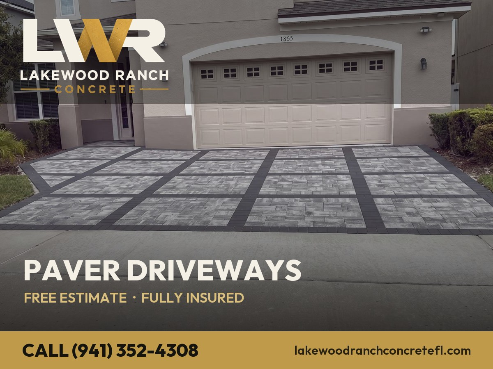
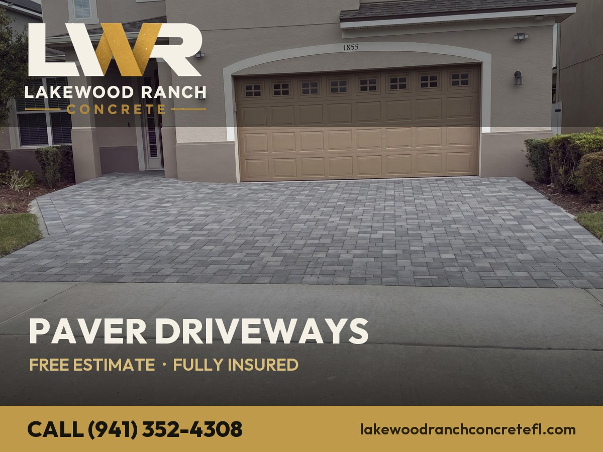
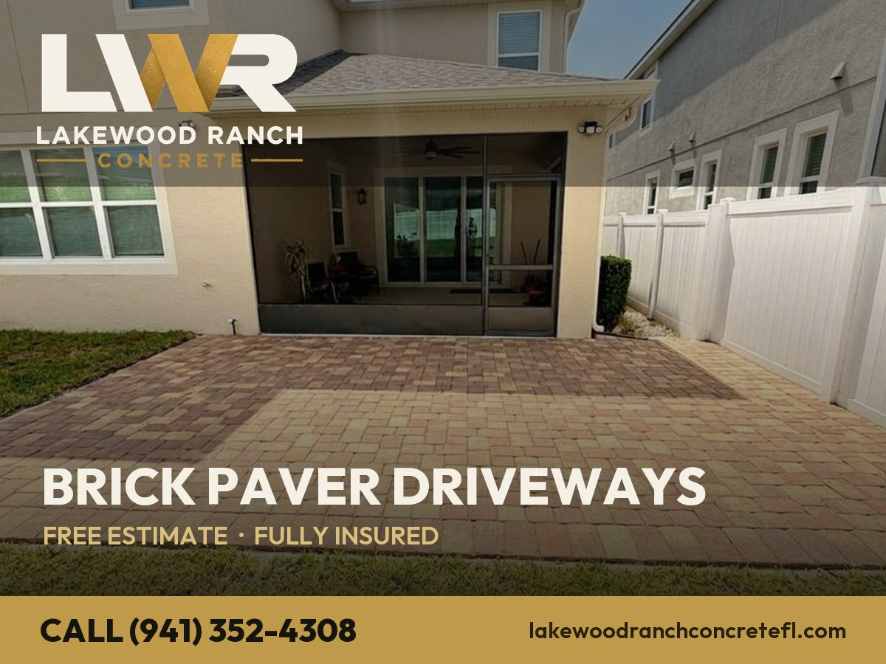
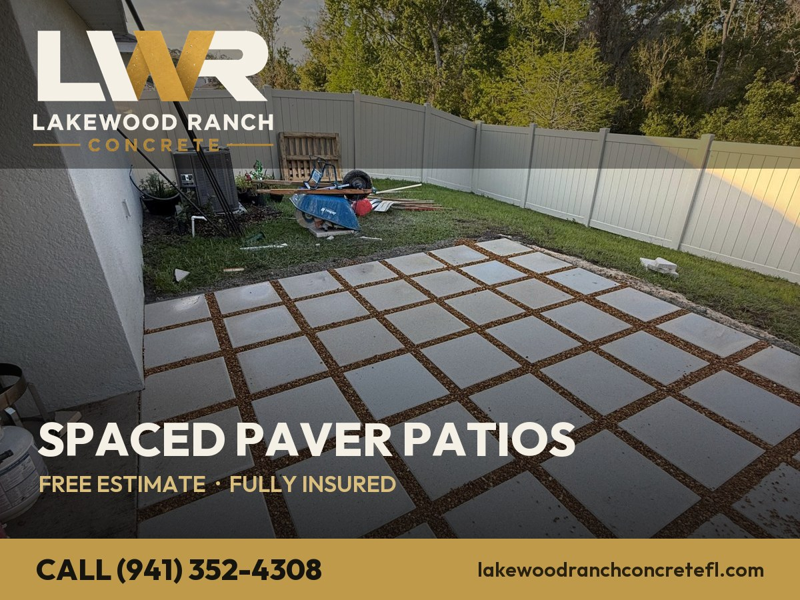
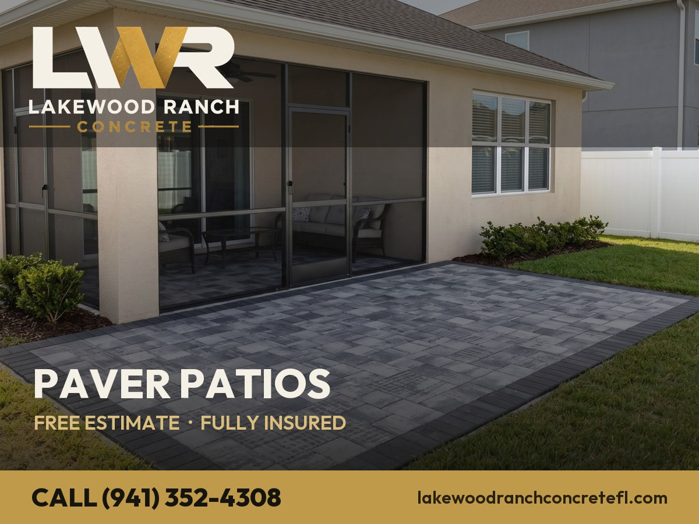
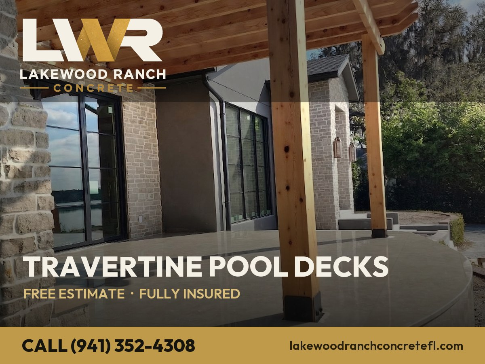
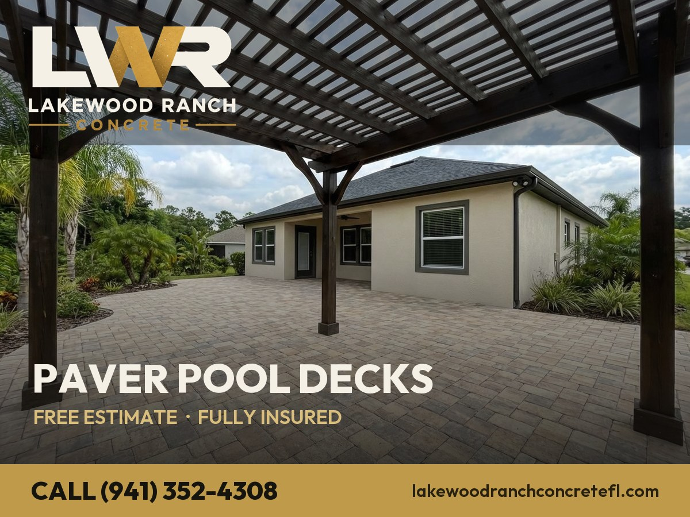
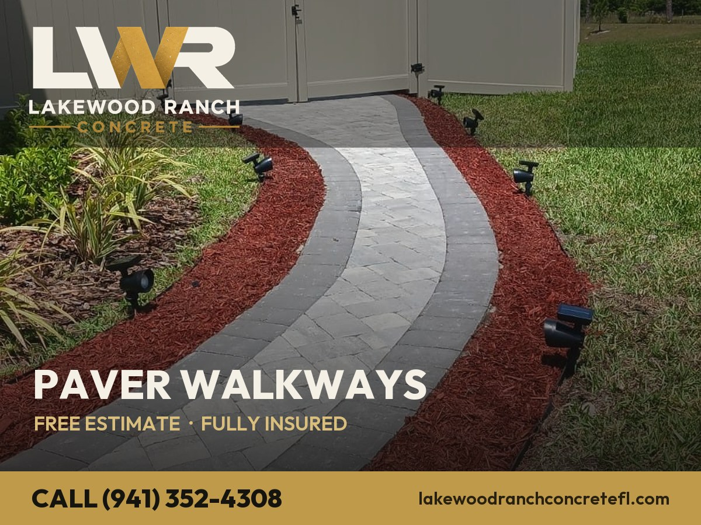
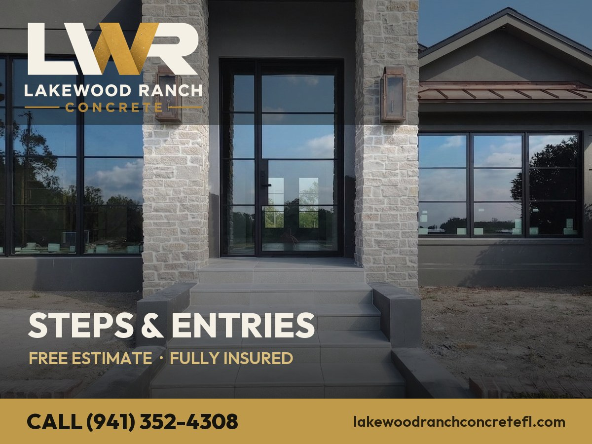

Automatizar no Make (GBP já conectado)
- Publique o site (git push) — as imagens ficam públicas em
https://lakewoodranchconcretefl.com/images/posts/post-01.jpg… - Crie um Google Sheet e importe o
posts-gbp.csv(colunas Date, Time, Content, Image URL, CTA, CTA Link, Status). - No Make, novo cenário: Schedule (Seg/Qua/Sex 09:00) → Google Sheets “Search Rows” (Status vazio, ordenar por Date, limite 1) → Google My Business “Create a Post” (Summary = Content, Media/Photo = Image URL, CTA = CTA + CTA Link) → Google Sheets “Update Row” (Status = Posted).
- Ative o cenário. Pronto: 36 posts, 3x/semana, no piloto automático — sem repetir (o Status controla).
Alternativa 1-clique: no Make, importe o CSV numa Data Store em vez de Sheet. O fluxo é o mesmo (Schedule → pega próximo → GMB Create Post → marca como enviado). Quero montar o cenário pra você? Tenho acesso ao seu Make — só pedir.
12 templates de imagem (1200×900)












Calendário — 36 posts (a partir de 2026-07-13)
| WEEK 1 | ||
| Monday 2026-07-13 Service Spotlight |
|
Concrete Driveways in Lakewood Ranch, FL. Looking for a concrete driveways contractor in Lakewood Ranch? Lakewood Ranch Concrete installs a poured concrete driveway engineered for Florida heat and shifting soil. We also do concrete & paver driveways, patios, pool decks, travertine, stamped concrete, sidewalks & sealing across Lakewood Ranch, Bradenton, Parrish & Sarasota and all of Manatee & Sarasota County. Compacted base, engineered joints, HOA/ARC-ready. Fully insured. Free written estimates. Call or text (941) 352-4308. #ConcreteDriveways #LakewoodRanch #ConcreteContractor #Pavers #LakewoodRanchFL Button: Learn more → https://lakewoodranchconcretefl.com/concrete-driveways/lakewood-ranch/ |
| Wednesday 2026-07-15 Free-Estimate Offer |
|
FREE concrete patios estimate in Bradenton, FL within 24 hours. Concrete Patios done right — a broom, smooth or stamped concrete patio built for Gulf Coast sun and drainage. Serving Bradenton, Lakewood Ranch, Palmetto & Ellenton & the Suncoast: concrete & paver driveways, patios, pool decks, travertine, stamped concrete, sidewalks & sealing. No pressure, fully insured, same crew start to finish. Call or text (941) 352-4308 for your concrete patios in Bradenton. #ConcretePatios #Bradenton #ConcreteContractor #Pavers #BradentonFL Button: Call now → tel:+19413524308 |
| Friday 2026-07-17 Tip / Educational |
|
Sarasota concrete pool decks: why base prep is the whole job. Most cracked concrete and settled pavers in Sarasota trace back to a rushed base. Our concrete pool decks start with excavation, clean fill and a compacted base. Concrete Pool Decks plus concrete & paver driveways, patios, pool decks, travertine, stamped concrete, sidewalks & sealing in Sarasota, Osprey, Nokomis & Venice. Fully insured, free estimate. (941) 352-4308. #ConcretePoolDecks #Sarasota #ConcreteContractor #Pavers #SarasotaFL Button: Learn more → https://lakewoodranchconcretefl.com/concrete-pool-decks/sarasota/ |
| WEEK 2 | ||
| Monday 2026-07-20 Recent Work |
|
Just finished a stamped concrete in Parrish, FL. Stamped concrete that reads like stone and clears HOA/ARC review — done right the first time. Your Parrish stamped concrete could be next. We install concrete & paver driveways, patios, pool decks, travertine, stamped concrete, sidewalks & sealing across Parrish, Ellenton, Palmetto & Bradenton. Free estimates, fully insured, HOA/ARC-ready. (941) 352-4308. #StampedConcrete #Parrish #ConcreteContractor #Pavers #ParrishFL Button: Learn more → https://lakewoodranchconcretefl.com/stamped-concrete/parrish/ |
| Wednesday 2026-07-22 Pavers vs Concrete |
Pavers or concrete for your Palmetto concrete slabs? We install both. Concrete Slabs & Pads contractor serving Palmetto, Ellenton, Bradenton & Parrish — concrete & paver driveways, patios, pool decks, travertine, stamped concrete, sidewalks & sealing. Compacted base, engineered joints, fully insured. Free concrete slabs estimate in Palmetto. Call or text (941) 352-4308. #ConcreteSlabs #Palmetto #ConcreteContractor #Pavers #PalmettoFL Button: Learn more → https://lakewoodranchconcretefl.com/concrete-slabs/palmetto/ |
|
| Friday 2026-07-24 Service Spotlight |
|
Concrete Resurfacing & Repair in Venice, FL. Looking for a resurfacing & repair contractor in Venice? Lakewood Ranch Concrete installs concrete resurfacing that renews a worn surface without a full tear-out. We also do concrete & paver driveways, patios, pool decks, travertine, stamped concrete, sidewalks & sealing across Venice, Nokomis, Osprey & North Port and all of Manatee & Sarasota County. Compacted base, engineered joints, HOA/ARC-ready. Fully insured. Free written estimates. Call or text (941) 352-4308. #ResurfacingAmp;Repair #Venice #ConcreteContractor #Pavers #VeniceFL Button: Learn more → https://lakewoodranchconcretefl.com/concrete-resurfacing/venice/ |
| WEEK 3 | ||
| Monday 2026-07-27 Free-Estimate Offer |
|
FREE paver driveways estimate in Ellenton, FL within 24 hours. Paver Driveways done right — a paver driveway on a compacted base with polymeric joint sand. Serving Ellenton, Palmetto, Parrish & Bradenton & the Suncoast: concrete & paver driveways, patios, pool decks, travertine, stamped concrete, sidewalks & sealing. No pressure, fully insured, same crew start to finish. Call or text (941) 352-4308 for your paver driveways in Ellenton. #PaverDriveways #Ellenton #ConcreteContractor #Pavers #EllentonFL Button: Call now → tel:+19413524308 |
| Wednesday 2026-07-29 Tip / Educational |
|
North Port paver patios: why base prep is the whole job. Most cracked concrete and settled pavers in North Port trace back to a rushed base. Our paver patios start with excavation, clean fill and a compacted base. Paver Patios & Walkways plus concrete & paver driveways, patios, pool decks, travertine, stamped concrete, sidewalks & sealing in North Port, Venice, Port Charlotte & Punta Gorda. Fully insured, free estimate. (941) 352-4308. #PaverPatios #NorthPort #ConcreteContractor #Pavers #NorthPortFL Button: Learn more → https://lakewoodranchconcretefl.com/paver-patios-walkways/north-port/ |
| Friday 2026-07-31 Recent Work |
Just finished a pool deck pavers in Riverview, FL. A travertine or paver pool deck, cool underfoot and sealed — done right the first time. Your Riverview pool deck pavers could be next. We install concrete & paver driveways, patios, pool decks, travertine, stamped concrete, sidewalks & sealing across Riverview, Brandon, Apollo Beach & Ruskin. Free estimates, fully insured, HOA/ARC-ready. (941) 352-4308. #PoolDeckPavers #Riverview #ConcreteContractor #Pavers #RiverviewFL Button: Learn more → https://lakewoodranchconcretefl.com/pool-deck-pavers/riverview/ |
|
| WEEK 4 | ||
| Monday 2026-08-03 Pavers vs Concrete |
Pavers or concrete for your Sun City Center paver sealing? We install both. Paver Sealing & Restoration contractor serving Sun City Center, Ruskin, Wimauma & Apollo Beach — concrete & paver driveways, patios, pool decks, travertine, stamped concrete, sidewalks & sealing. Compacted base, engineered joints, fully insured. Free paver sealing estimate in Sun City Center. Call or text (941) 352-4308. #PaverSealing #SunCityCenter #ConcreteContractor #Pavers #SunCityCenterFL Button: Learn more → https://lakewoodranchconcretefl.com/paver-sealing/sun-city-center/ |
|
| Wednesday 2026-08-05 Service Spotlight |
|
Concrete Driveways in Tampa, FL. Looking for a concrete driveways contractor in Tampa? Lakewood Ranch Concrete installs a poured concrete driveway engineered for Florida heat and shifting soil. We also do concrete & paver driveways, patios, pool decks, travertine, stamped concrete, sidewalks & sealing across Tampa, Brandon, Riverview & Apollo Beach and all of Manatee & Sarasota County. Compacted base, engineered joints, HOA/ARC-ready. Fully insured. Free written estimates. Call or text (941) 352-4308. #ConcreteDriveways #Tampa #ConcreteContractor #Pavers #TampaFL Button: Learn more → https://lakewoodranchconcretefl.com/concrete-driveways/tampa/ |
| Friday 2026-08-07 Free-Estimate Offer |
|
FREE concrete patios estimate in Brandon, FL within 24 hours. Concrete Patios done right — a broom, smooth or stamped concrete patio built for Gulf Coast sun and drainage. Serving Brandon, Riverview, Tampa & Valrico & the Suncoast: concrete & paver driveways, patios, pool decks, travertine, stamped concrete, sidewalks & sealing. No pressure, fully insured, same crew start to finish. Call or text (941) 352-4308 for your concrete patios in Brandon. #ConcretePatios #Brandon #ConcreteContractor #Pavers #BrandonFL Button: Call now → tel:+19413524308 |
| WEEK 5 | ||
| Monday 2026-08-10 Tip / Educational |
|
Lakewood Ranch concrete pool decks: why base prep is the whole job. Most cracked concrete and settled pavers in Lakewood Ranch trace back to a rushed base. Our concrete pool decks start with excavation, clean fill and a compacted base. Concrete Pool Decks plus concrete & paver driveways, patios, pool decks, travertine, stamped concrete, sidewalks & sealing in Lakewood Ranch, Bradenton, Parrish & Sarasota. Fully insured, free estimate. (941) 352-4308. #ConcretePoolDecks #LakewoodRanch #ConcreteContractor #Pavers #LakewoodRanchFL Button: Learn more → https://lakewoodranchconcretefl.com/concrete-pool-decks/lakewood-ranch/ |
| Wednesday 2026-08-12 Recent Work |
|
Just finished a stamped concrete in Bradenton, FL. Stamped concrete that reads like stone and clears HOA/ARC review — done right the first time. Your Bradenton stamped concrete could be next. We install concrete & paver driveways, patios, pool decks, travertine, stamped concrete, sidewalks & sealing across Bradenton, Lakewood Ranch, Palmetto & Ellenton. Free estimates, fully insured, HOA/ARC-ready. (941) 352-4308. #StampedConcrete #Bradenton #ConcreteContractor #Pavers #BradentonFL Button: Learn more → https://lakewoodranchconcretefl.com/stamped-concrete/bradenton/ |
| Friday 2026-08-14 Pavers vs Concrete |
|
Pavers or concrete for your Sarasota concrete slabs? We install both. Concrete Slabs & Pads contractor serving Sarasota, Osprey, Nokomis & Venice — concrete & paver driveways, patios, pool decks, travertine, stamped concrete, sidewalks & sealing. Compacted base, engineered joints, fully insured. Free concrete slabs estimate in Sarasota. Call or text (941) 352-4308. #ConcreteSlabs #Sarasota #ConcreteContractor #Pavers #SarasotaFL Button: Learn more → https://lakewoodranchconcretefl.com/concrete-slabs/sarasota/ |
| WEEK 6 | ||
| Monday 2026-08-17 Service Spotlight |
|
Concrete Resurfacing & Repair in Parrish, FL. Looking for a resurfacing & repair contractor in Parrish? Lakewood Ranch Concrete installs concrete resurfacing that renews a worn surface without a full tear-out. We also do concrete & paver driveways, patios, pool decks, travertine, stamped concrete, sidewalks & sealing across Parrish, Ellenton, Palmetto & Bradenton and all of Manatee & Sarasota County. Compacted base, engineered joints, HOA/ARC-ready. Fully insured. Free written estimates. Call or text (941) 352-4308. #ResurfacingAmp;Repair #Parrish #ConcreteContractor #Pavers #ParrishFL Button: Learn more → https://lakewoodranchconcretefl.com/concrete-resurfacing/parrish/ |
| Wednesday 2026-08-19 Free-Estimate Offer |
FREE paver driveways estimate in Palmetto, FL within 24 hours. Paver Driveways done right — a paver driveway on a compacted base with polymeric joint sand. Serving Palmetto, Ellenton, Bradenton & Parrish & the Suncoast: concrete & paver driveways, patios, pool decks, travertine, stamped concrete, sidewalks & sealing. No pressure, fully insured, same crew start to finish. Call or text (941) 352-4308 for your paver driveways in Palmetto. #PaverDriveways #Palmetto #ConcreteContractor #Pavers #PalmettoFL Button: Call now → tel:+19413524308 |
|
| Friday 2026-08-21 Tip / Educational |
Venice paver patios: why base prep is the whole job. Most cracked concrete and settled pavers in Venice trace back to a rushed base. Our paver patios start with excavation, clean fill and a compacted base. Paver Patios & Walkways plus concrete & paver driveways, patios, pool decks, travertine, stamped concrete, sidewalks & sealing in Venice, Nokomis, Osprey & North Port. Fully insured, free estimate. (941) 352-4308. #PaverPatios #Venice #ConcreteContractor #Pavers #VeniceFL Button: Learn more → https://lakewoodranchconcretefl.com/paver-patios-walkways/venice/ |
|
| WEEK 7 | ||
| Monday 2026-08-24 Recent Work |
Just finished a pool deck pavers in Ellenton, FL. A travertine or paver pool deck, cool underfoot and sealed — done right the first time. Your Ellenton pool deck pavers could be next. We install concrete & paver driveways, patios, pool decks, travertine, stamped concrete, sidewalks & sealing across Ellenton, Palmetto, Parrish & Bradenton. Free estimates, fully insured, HOA/ARC-ready. (941) 352-4308. #PoolDeckPavers #Ellenton #ConcreteContractor #Pavers #EllentonFL Button: Learn more → https://lakewoodranchconcretefl.com/pool-deck-pavers/ellenton/ |
|
| Wednesday 2026-08-26 Pavers vs Concrete |
|
Pavers or concrete for your North Port paver sealing? We install both. Paver Sealing & Restoration contractor serving North Port, Venice, Port Charlotte & Punta Gorda — concrete & paver driveways, patios, pool decks, travertine, stamped concrete, sidewalks & sealing. Compacted base, engineered joints, fully insured. Free paver sealing estimate in North Port. Call or text (941) 352-4308. #PaverSealing #NorthPort #ConcreteContractor #Pavers #NorthPortFL Button: Learn more → https://lakewoodranchconcretefl.com/paver-sealing/north-port/ |
| Friday 2026-08-28 Service Spotlight |
|
Concrete Driveways in Riverview, FL. Looking for a concrete driveways contractor in Riverview? Lakewood Ranch Concrete installs a poured concrete driveway engineered for Florida heat and shifting soil. We also do concrete & paver driveways, patios, pool decks, travertine, stamped concrete, sidewalks & sealing across Riverview, Brandon, Apollo Beach & Ruskin and all of Manatee & Sarasota County. Compacted base, engineered joints, HOA/ARC-ready. Fully insured. Free written estimates. Call or text (941) 352-4308. #ConcreteDriveways #Riverview #ConcreteContractor #Pavers #RiverviewFL Button: Learn more → https://lakewoodranchconcretefl.com/concrete-driveways/riverview/ |
| WEEK 8 | ||
| Monday 2026-08-31 Free-Estimate Offer |
|
FREE concrete patios estimate in Sun City Center, FL within 24 hours. Concrete Patios done right — a broom, smooth or stamped concrete patio built for Gulf Coast sun and drainage. Serving Sun City Center, Ruskin, Wimauma & Apollo Beach & the Suncoast: concrete & paver driveways, patios, pool decks, travertine, stamped concrete, sidewalks & sealing. No pressure, fully insured, same crew start to finish. Call or text (941) 352-4308 for your concrete patios in Sun City Center. #ConcretePatios #SunCityCenter #ConcreteContractor #Pavers #SunCityCenterFL Button: Call now → tel:+19413524308 |
| Wednesday 2026-09-02 Tip / Educational |
|
Tampa concrete pool decks: why base prep is the whole job. Most cracked concrete and settled pavers in Tampa trace back to a rushed base. Our concrete pool decks start with excavation, clean fill and a compacted base. Concrete Pool Decks plus concrete & paver driveways, patios, pool decks, travertine, stamped concrete, sidewalks & sealing in Tampa, Brandon, Riverview & Apollo Beach. Fully insured, free estimate. (941) 352-4308. #ConcretePoolDecks #Tampa #ConcreteContractor #Pavers #TampaFL Button: Learn more → https://lakewoodranchconcretefl.com/concrete-pool-decks/tampa/ |
| Friday 2026-09-04 Recent Work |
|
Just finished a stamped concrete in Brandon, FL. Stamped concrete that reads like stone and clears HOA/ARC review — done right the first time. Your Brandon stamped concrete could be next. We install concrete & paver driveways, patios, pool decks, travertine, stamped concrete, sidewalks & sealing across Brandon, Riverview, Tampa & Valrico. Free estimates, fully insured, HOA/ARC-ready. (941) 352-4308. #StampedConcrete #Brandon #ConcreteContractor #Pavers #BrandonFL Button: Learn more → https://lakewoodranchconcretefl.com/stamped-concrete/brandon/ |
| WEEK 9 | ||
| Monday 2026-09-07 Pavers vs Concrete |
Pavers or concrete for your Lakewood Ranch concrete slabs? We install both. Concrete Slabs & Pads contractor serving Lakewood Ranch, Bradenton, Parrish & Sarasota — concrete & paver driveways, patios, pool decks, travertine, stamped concrete, sidewalks & sealing. Compacted base, engineered joints, fully insured. Free concrete slabs estimate in Lakewood Ranch. Call or text (941) 352-4308. #ConcreteSlabs #LakewoodRanch #ConcreteContractor #Pavers #LakewoodRanchFL Button: Learn more → https://lakewoodranchconcretefl.com/concrete-slabs/lakewood-ranch/ |
|
| Wednesday 2026-09-09 Service Spotlight |
|
Concrete Resurfacing & Repair in Bradenton, FL. Looking for a resurfacing & repair contractor in Bradenton? Lakewood Ranch Concrete installs concrete resurfacing that renews a worn surface without a full tear-out. We also do concrete & paver driveways, patios, pool decks, travertine, stamped concrete, sidewalks & sealing across Bradenton, Lakewood Ranch, Palmetto & Ellenton and all of Manatee & Sarasota County. Compacted base, engineered joints, HOA/ARC-ready. Fully insured. Free written estimates. Call or text (941) 352-4308. #ResurfacingAmp;Repair #Bradenton #ConcreteContractor #Pavers #BradentonFL Button: Learn more → https://lakewoodranchconcretefl.com/concrete-resurfacing/bradenton/ |
| Friday 2026-09-11 Free-Estimate Offer |
FREE paver driveways estimate in Sarasota, FL within 24 hours. Paver Driveways done right — a paver driveway on a compacted base with polymeric joint sand. Serving Sarasota, Osprey, Nokomis & Venice & the Suncoast: concrete & paver driveways, patios, pool decks, travertine, stamped concrete, sidewalks & sealing. No pressure, fully insured, same crew start to finish. Call or text (941) 352-4308 for your paver driveways in Sarasota. #PaverDriveways #Sarasota #ConcreteContractor #Pavers #SarasotaFL Button: Call now → tel:+19413524308 |
|
| WEEK 10 | ||
| Monday 2026-09-14 Tip / Educational |
Parrish paver patios: why base prep is the whole job. Most cracked concrete and settled pavers in Parrish trace back to a rushed base. Our paver patios start with excavation, clean fill and a compacted base. Paver Patios & Walkways plus concrete & paver driveways, patios, pool decks, travertine, stamped concrete, sidewalks & sealing in Parrish, Ellenton, Palmetto & Bradenton. Fully insured, free estimate. (941) 352-4308. #PaverPatios #Parrish #ConcreteContractor #Pavers #ParrishFL Button: Learn more → https://lakewoodranchconcretefl.com/paver-patios-walkways/parrish/ |
|
| Wednesday 2026-09-16 Recent Work |
Just finished a pool deck pavers in Palmetto, FL. A travertine or paver pool deck, cool underfoot and sealed — done right the first time. Your Palmetto pool deck pavers could be next. We install concrete & paver driveways, patios, pool decks, travertine, stamped concrete, sidewalks & sealing across Palmetto, Ellenton, Bradenton & Parrish. Free estimates, fully insured, HOA/ARC-ready. (941) 352-4308. #PoolDeckPavers #Palmetto #ConcreteContractor #Pavers #PalmettoFL Button: Learn more → https://lakewoodranchconcretefl.com/pool-deck-pavers/palmetto/ |
|
| Friday 2026-09-18 Pavers vs Concrete |
Pavers or concrete for your Venice paver sealing? We install both. Paver Sealing & Restoration contractor serving Venice, Nokomis, Osprey & North Port — concrete & paver driveways, patios, pool decks, travertine, stamped concrete, sidewalks & sealing. Compacted base, engineered joints, fully insured. Free paver sealing estimate in Venice. Call or text (941) 352-4308. #PaverSealing #Venice #ConcreteContractor #Pavers #VeniceFL Button: Learn more → https://lakewoodranchconcretefl.com/paver-sealing/venice/ |
|
| WEEK 11 | ||
| Monday 2026-09-21 Service Spotlight |
|
Concrete Driveways in Ellenton, FL. Looking for a concrete driveways contractor in Ellenton? Lakewood Ranch Concrete installs a poured concrete driveway engineered for Florida heat and shifting soil. We also do concrete & paver driveways, patios, pool decks, travertine, stamped concrete, sidewalks & sealing across Ellenton, Palmetto, Parrish & Bradenton and all of Manatee & Sarasota County. Compacted base, engineered joints, HOA/ARC-ready. Fully insured. Free written estimates. Call or text (941) 352-4308. #ConcreteDriveways #Ellenton #ConcreteContractor #Pavers #EllentonFL Button: Learn more → https://lakewoodranchconcretefl.com/concrete-driveways/ellenton/ |
| Wednesday 2026-09-23 Free-Estimate Offer |
|
FREE concrete patios estimate in North Port, FL within 24 hours. Concrete Patios done right — a broom, smooth or stamped concrete patio built for Gulf Coast sun and drainage. Serving North Port, Venice, Port Charlotte & Punta Gorda & the Suncoast: concrete & paver driveways, patios, pool decks, travertine, stamped concrete, sidewalks & sealing. No pressure, fully insured, same crew start to finish. Call or text (941) 352-4308 for your concrete patios in North Port. #ConcretePatios #NorthPort #ConcreteContractor #Pavers #NorthPortFL Button: Call now → tel:+19413524308 |
| Friday 2026-09-25 Tip / Educational |
|
Riverview concrete pool decks: why base prep is the whole job. Most cracked concrete and settled pavers in Riverview trace back to a rushed base. Our concrete pool decks start with excavation, clean fill and a compacted base. Concrete Pool Decks plus concrete & paver driveways, patios, pool decks, travertine, stamped concrete, sidewalks & sealing in Riverview, Brandon, Apollo Beach & Ruskin. Fully insured, free estimate. (941) 352-4308. #ConcretePoolDecks #Riverview #ConcreteContractor #Pavers #RiverviewFL Button: Learn more → https://lakewoodranchconcretefl.com/concrete-pool-decks/riverview/ |
| WEEK 12 | ||
| Monday 2026-09-28 Recent Work |
|
Just finished a stamped concrete in Sun City Center, FL. Stamped concrete that reads like stone and clears HOA/ARC review — done right the first time. Your Sun City Center stamped concrete could be next. We install concrete & paver driveways, patios, pool decks, travertine, stamped concrete, sidewalks & sealing across Sun City Center, Ruskin, Wimauma & Apollo Beach. Free estimates, fully insured, HOA/ARC-ready. (941) 352-4308. #StampedConcrete #SunCityCenter #ConcreteContractor #Pavers #SunCityCenterFL Button: Learn more → https://lakewoodranchconcretefl.com/stamped-concrete/sun-city-center/ |
| Wednesday 2026-09-30 Pavers vs Concrete |
|
Pavers or concrete for your Tampa concrete slabs? We install both. Concrete Slabs & Pads contractor serving Tampa, Brandon, Riverview & Apollo Beach — concrete & paver driveways, patios, pool decks, travertine, stamped concrete, sidewalks & sealing. Compacted base, engineered joints, fully insured. Free concrete slabs estimate in Tampa. Call or text (941) 352-4308. #ConcreteSlabs #Tampa #ConcreteContractor #Pavers #TampaFL Button: Learn more → https://lakewoodranchconcretefl.com/concrete-slabs/tampa/ |
| Friday 2026-10-02 Service Spotlight |
|
Concrete Resurfacing & Repair in Brandon, FL. Looking for a resurfacing & repair contractor in Brandon? Lakewood Ranch Concrete installs concrete resurfacing that renews a worn surface without a full tear-out. We also do concrete & paver driveways, patios, pool decks, travertine, stamped concrete, sidewalks & sealing across Brandon, Riverview, Tampa & Valrico and all of Manatee & Sarasota County. Compacted base, engineered joints, HOA/ARC-ready. Fully insured. Free written estimates. Call or text (941) 352-4308. #ResurfacingAmp;Repair #Brandon #ConcreteContractor #Pavers #BrandonFL Button: Learn more → https://lakewoodranchconcretefl.com/concrete-resurfacing/brandon/ |